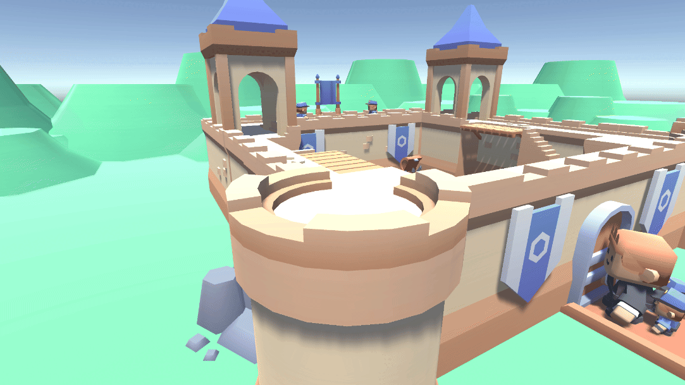

For the final project in the course "Inteligencia Artificial en Videojuegos", we had to build a simulation using GOAP with a setting of our choice. I chose to implement a simulation of a castle siege, with two types of attackers and three types of defenders. The attackers have to breach the castle door and reach the flag at the top, while killing any defenders they come across.
Attackers

Goals: Destroy the flag, defend itself
The first type of attacker is the Soldier. It has the following possible actions:
- Go To Door: If the castle door is not broken and the agent is not already at the door, move towards it.
- Damage Door: Punch the door dealing 5 damage per second. The door has 100 health points.
- Go To Flag: If the door is broken and the agent is not already at the flag, move towards it.
- Damage Flag: Punch the flag dealing 5 damage per second. The flag also has 100 health points.
- Defend Self: This action overrides any other action if the agent is near a defender. Walks towards the defender and punches it dealing 25 damage per second.

Goals: Destroy the door
The second and last type of attacker is the Tank. The Tank has 8 times more health than a basic Attacker, and will not try to defend itself if enemies are nearby. Its purpose is to tank damage and keep the defenders busy while the Soldiers kill other Guards. It has the following possible actions:
- Go To Door: If the castle door is not broken and the agent is not already at the door, move towards it.
- Damage Door: Punch the door dealing 5 damage per second. The door has 100 health points.
- Retreat: If the door is broken, retreat to the starting position.
Defenders
Goals: Defend the archer towers, defend itself
The first type of defender is the Archer, a ranged unit that will kill attackers from large distances. They can hold up to 6 arrows in their quiver, and if at any point they run out of arrows they must be refilled at the arrow chest on the ground floor. They will go to the first free archer tower and defend their position, shooting arrows at far away enemies until they run out. Archers have the following possible actions:
- Go To Chest: If out of arrows, go to the arrow chest to refill. The Archer can only carry 6 arrows at a time.
- Go To Archer Tower: Pick a free archer tower and go to it. If there are no free towers, wait until one is available.
- Defend Tower: Shoot enemies that are in range of the tower. The Archer will shoot at the closest enemy until it dies or goes out of range.
- Defend Self: If an enemy is near, shoot arrows at it until it dies or goes out of range.
Goals: Go to a guard position, defend itself
The second type of defender is the Guard. The Guard is a melee unit that will hold a position outside the door and kill any attackers that come near. They have the following possible actions:
- Go To Defense Post: Pick a free defense post and go to it. If there are no free posts, wait until one is available.
- Defend Post: Hold the current position.
- Defend Self: If an enemy is near, walk towards it and punch it until it dies or goes out of range.
Goals: Repair the castle door
The third and final type of defender is the Repairman. It is able to repair the castle door using resources from the resources pile. The Repairman has the following possible actions:
- Go To Resources Pile: If the agent is out of resources, go to the resources pile to get more.
- Go To Door: If the door is broken and the agent is not already at the door, move towards it.
- Repair Door: Repair the door healing 25 health points and using one resource unit. The door has 100 health points.